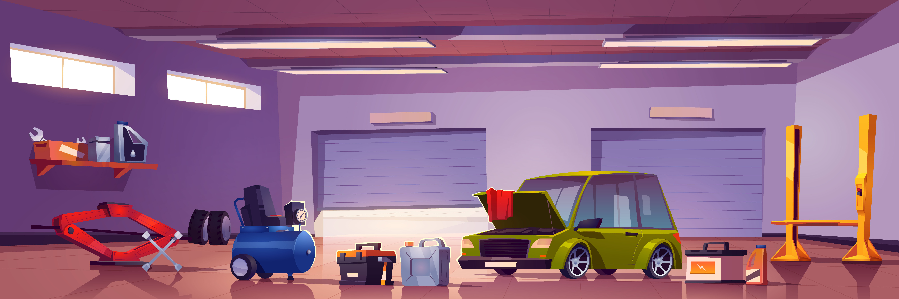

para el mantenimiento y reparación de tu vehículo.

¿Quienes Somos?
Somos Ecutronic Autos, una empresa del rubro automotriz, actualmente estamos en Lima y contamos con 3 locales en diferentes puntos de Lima.
Nuestro fuerte es la rama de Fuel Injection, donde tenemos técnicos especialistas para cubrir cualquier consulta sobre su vehículo.
Contamos con todos los repuestos alternativos y originales que tu vehículo necesita.
De igual forma somos proveedores de repuestos exclusivos para sus vehículos tanto alternativos como originales, ya que somos importadores tanto de China como de Brasil, por lo cual tendrá una garantía 100% asegurada.
¿Porque elegirnos?
¡Servicio de Calidad y satisfacción al cliente!
Ecutronic Autos atendemos todas las marcas y modelos de vehículos. Contamos con técnicos capacitados para atender a sus problemas en el rubro automotriz.
Asimismo, ofrecemos repuestos exclusivos para su vehículo.
Afinación de vehículos
El afinamiento vehicular es un mantenimiento que se le hace al carro para que funcione mejor, consuma menos gasolina y evitar fallas. Normalmente incluye cambio de aceite, filtros, revisión o cambio de bujías, limpieza de inyectores y chequeo general del motor. Se recomienda hacerlo cada cierto kilometraje o cuando el vehículo pierde fuerza, gasta más combustible o presenta fallas al encender. Es importante porque ayuda a mantener el motor en buen estado y puede prevenir reparaciones más costosas.
Prueba de bomba
La prueba de bomba de gasolina es una revisión que se hace para verificar si la bomba está enviando el combustible con la presión correcta al motor. Sirve para detectar fallas cuando el vehículo pierde fuerza, tarda en encender, se apaga solo o presenta jaloneos. Durante la prueba se mide la presión de combustible y se revisa si la bomba, filtro o sistema de alimentación están funcionando correctamente. Es importante porque una bomba en mal estado puede afectar el rendimiento del carro y provocar fallas más serias.
Prueba de bobina
La prueba de bobina es una revisión que se realiza para comprobar si la bobina de encendido está funcionando correctamente y enviando la energía necesaria a las bujías. Esta prueba ayuda a detectar fallas cuando el vehículo presenta pérdida de potencia, jaloneos, dificultad para encender o consumo excesivo de combustible. Durante la revisión se verifica el estado de la bobina, la corriente eléctrica y su rendimiento dentro del sistema de encendido. Es importante porque una bobina en mal estado puede causar fallas en el motor y afectar el desempeño general del vehículo.
Prueba de scaner
La prueba con escáner es una revisión electrónica que se realiza conectando un equipo de diagnóstico al vehículo para detectar fallas en el sistema del motor y otros componentes electrónicos. Sirve para identificar códigos de error, problemas en sensores, inyectores, sistema de encendido, emisiones y rendimiento general del vehículo. Es útil cuando se enciende el check engine, hay pérdida de potencia, consumo elevado de combustible o fallas irregulares. Esta prueba permite encontrar problemas con mayor precisión y ayuda a prevenir daños más graves o reparaciones innecesarias.
Limpieza & Prueba de inyectores
La limpieza y prueba de inyectores es un servicio que se realiza para eliminar suciedad o residuos acumulados y verificar que los inyectores estén trabajando correctamente. Ayuda a mejorar el rendimiento del motor, reducir el consumo de combustible y evitar fallas como jaloneos, pérdida de potencia o encendido irregular. También permite comprobar que cada inyector esté pulverizando el combustible de forma adecuada.
Cableado
La restauración del cableado automotriz consiste en revisar, reparar o reemplazar cables dañados, quemados, sulfatados o mal conectados dentro del sistema eléctrico del vehículo. Este trabajo ayuda a corregir fallas como cortocircuitos, pérdida de corriente, luces inestables, sensores con errores, problemas de encendido o fallas electrónicas generales. También incluye ordenamiento, aislamiento y protección del cableado para asegurar un funcionamiento seguro, estable y confiable de todos los sistemas eléctricos del vehículo.